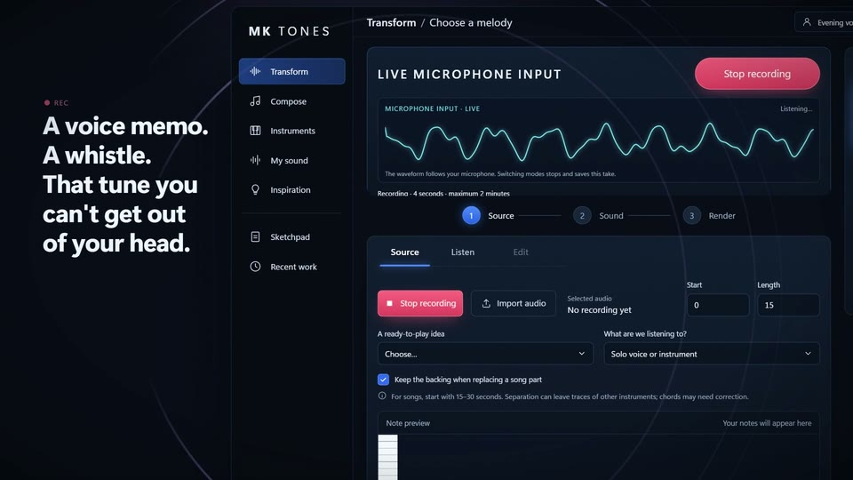
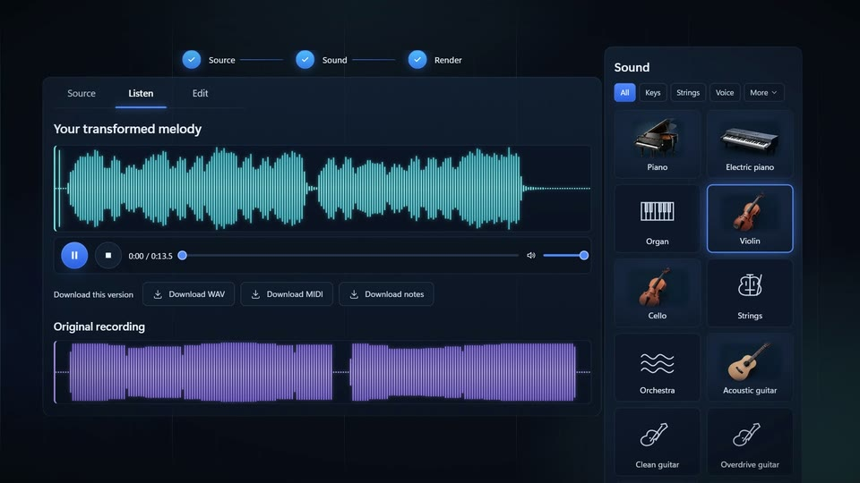
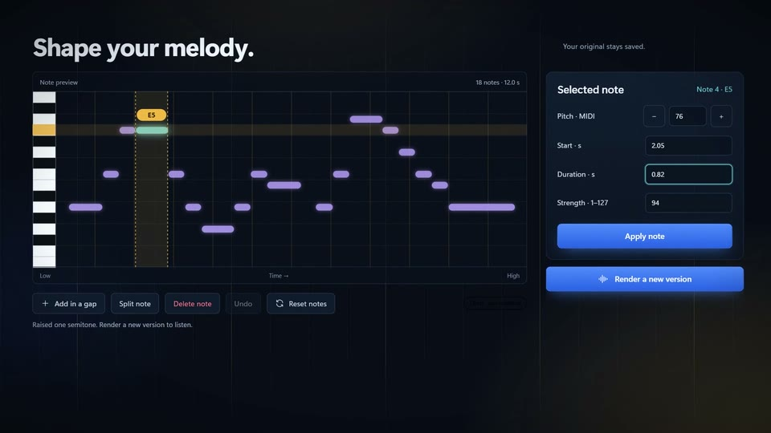
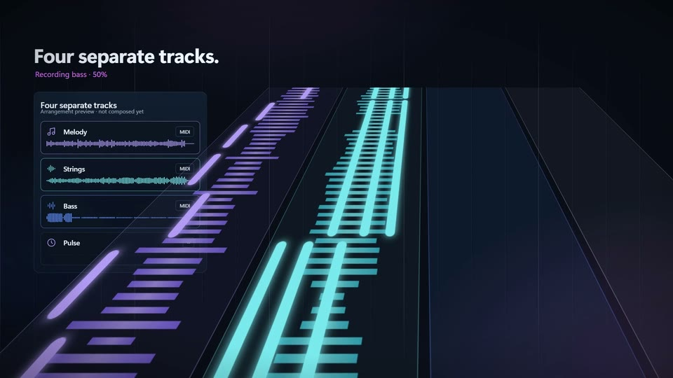
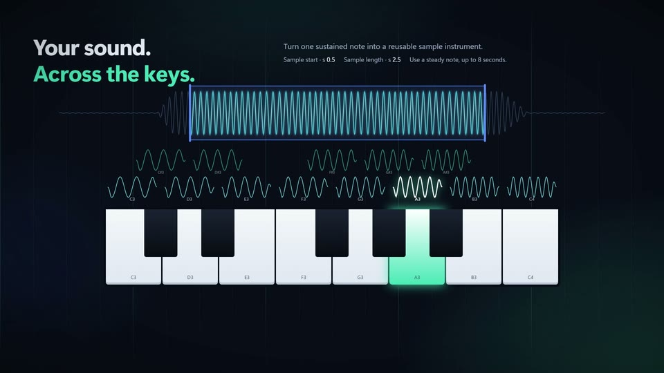
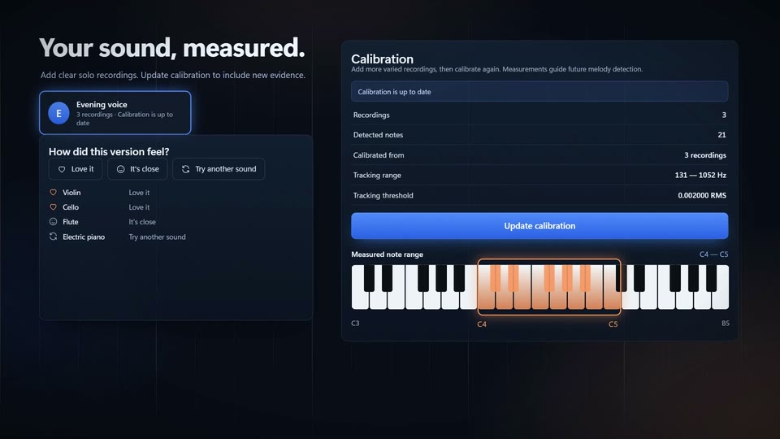
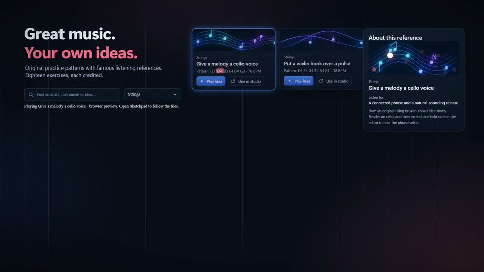
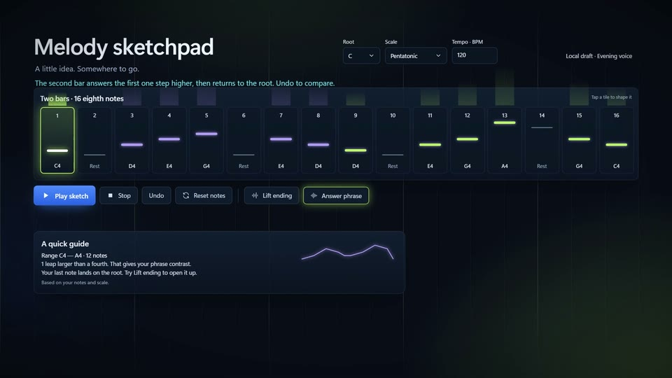
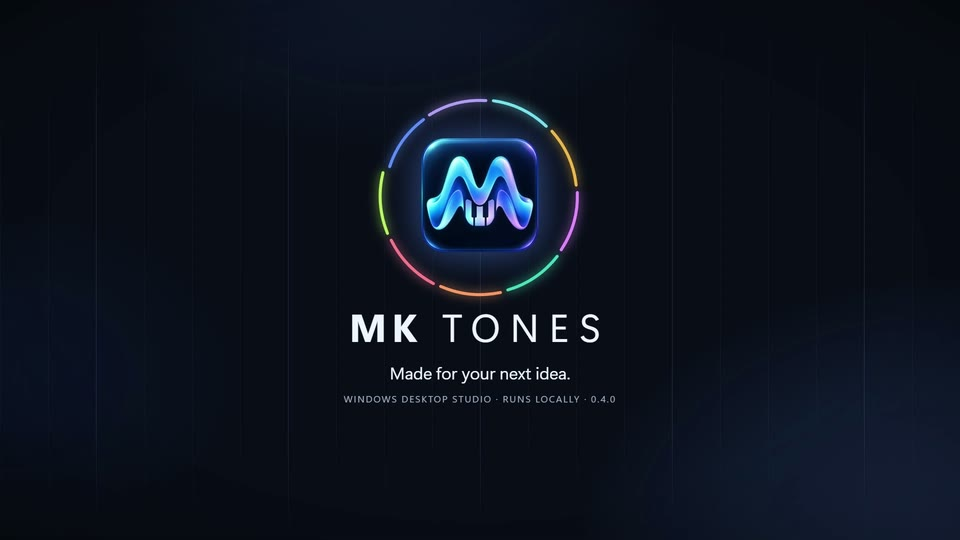

Hum it. See the notes.
A hummed phrase becomes notes on the piano roll, the idea behind MK Tones.
A hummed phrase becomes notes on the piano roll, the idea behind MK Tones.
A 135-second scroll film of MK Tones 0.4.0, the local Windows music studio: record, re-voice, edit, compose, calibrate and sketch, each feature its own world.
A hummed phrase becomes notes on the piano roll, the idea behind MK Tones.

Record a take while the live input moves on screen, or import a file, then say what you are listening to.

Choose one of 20 instrument sounds and render the same melody, with the original recording beside it.

Correct pitch, timing, length and strength, render a new version, and export WAV, MIDI or notes.

Pick a mood and get an original sketch with melody, strings, bass and pulse as separate tracks.

Turn one sustained note into a sample instrument, then compare its balanced and original level.

Each musician's takes calibrate a measured range, and listening ratings build a shortlist of sounds.

Eighteen credited listening references come with original practice patterns you can play or use.

Build a 16-step phrase in a scale, lift its ending or answer it, then play it on the keys.

Every render, sketch and instrument stays on this Windows PC, ready to pick up again.